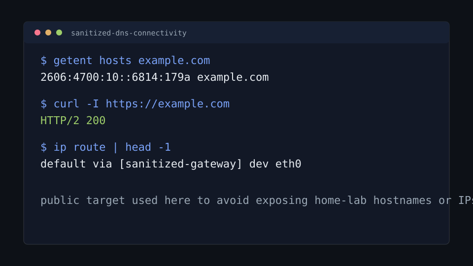

Objective
Practice a support-friendly troubleshooting flow: confirm the local network state, verify DNS, test the target service, collect packet evidence, and write the result clearly enough for a handoff.
Networking / Troubleshooting
A repeatable lab for separating DNS resolution failures from routing, HTTP service, local socket, and packet-level issues in a controlled Linux sandbox environment.
Practice a support-friendly troubleshooting flow: confirm the local network state, verify DNS, test the target service, collect packet evidence, and write the result clearly enough for a handoff.
This lab runs inside the Linux Exam Sandboxes project. The net-client container uses
the lab DNS service at 172.31.90.53, and the web service answers at
web.exam.lab.
cd D:\Projects\04_IT_Journey\Labs\Linux_Exam_Sandboxes
.\sandbox.ps1 up
.\sandbox.ps1 shell net-clientThese commands establish whether the client has an address, a route, a DNS resolver, a valid name lookup, and a reachable web target.
ip addr
ip route
cat /etc/resolv.conf
getent hosts web.exam.lab
dig @172.31.90.53 web.exam.lab
curl -I http://web.exam.lab
ss -tulpn
tcpdump -ni any port 53 -c 5web.exam.lab resolves to 172.31.90.40.dns.exam.lab resolves to 172.31.90.53.curl -I http://web.exam.lab returns an HTTP response from the Nginx target.tcpdump shows DNS query and response traffic when a lookup is repeated.To practice failure isolation, stop one service at a time from PowerShell, observe the symptom from the client container, then restore the service and validate again.
docker stop linux-exam-dns
docker start linux-exam-dns
docker stop linux-exam-web
docker start linux-exam-webThis public excerpt uses generic targets to avoid exposing home-lab hostnames or addresses, but it follows the same validation flow: resolve a name, test HTTP, then confirm the active route.
$ getent hosts example.com
2606:4700:10::6814:179a example.com
$ curl -I https://example.com
HTTP/2 200
$ ip route | head -1
default via [sanitized-gateway] dev eth0